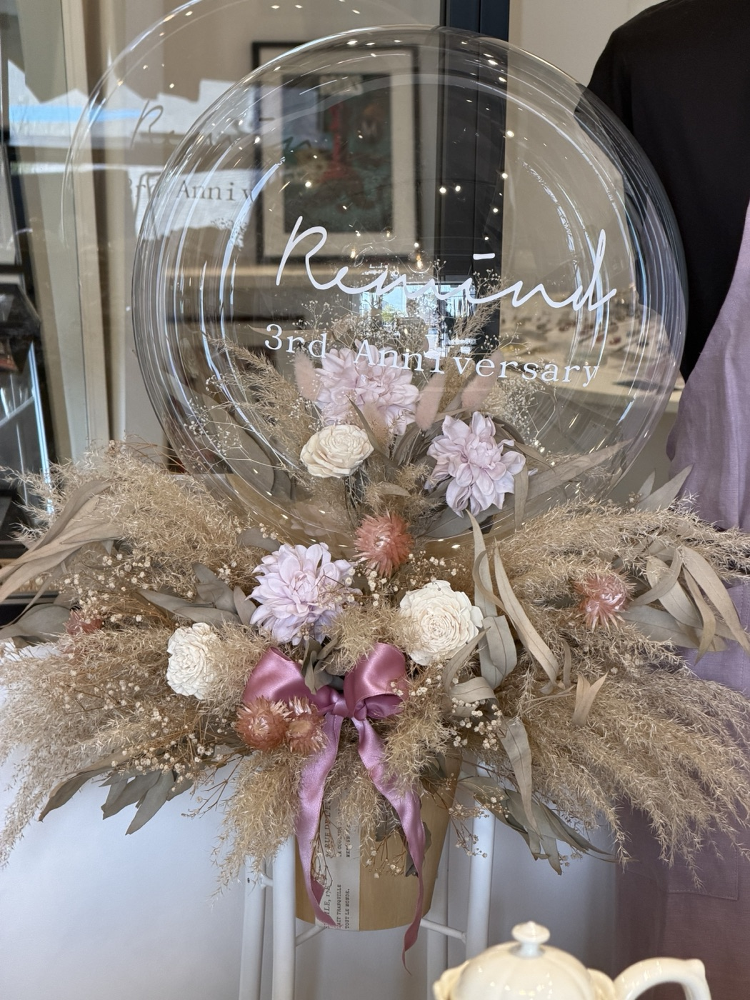
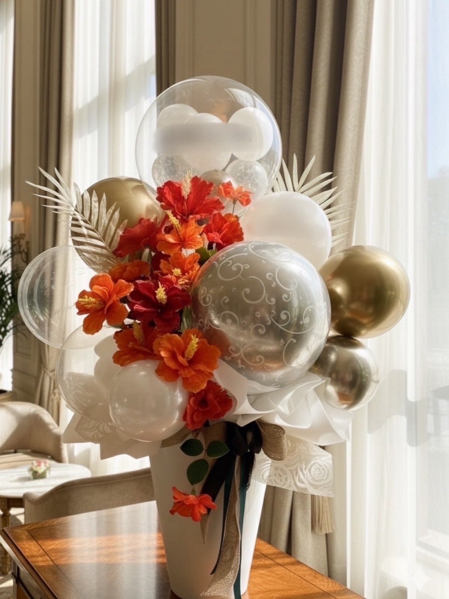
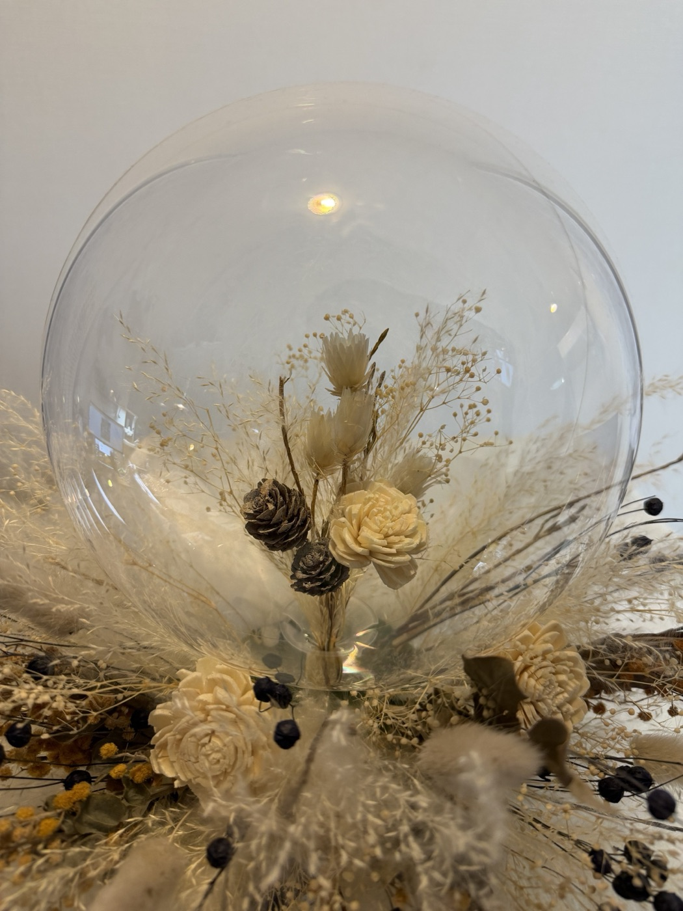
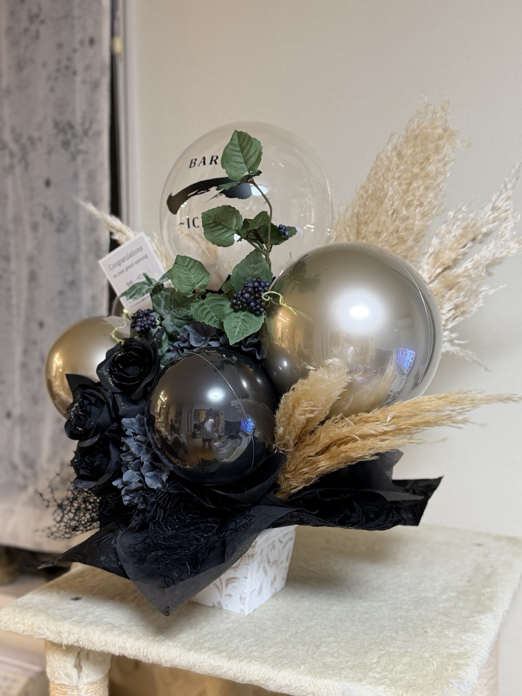

Order-made Balloon Atelier和歌山|オーダーメイドバルーン
振袖が決まって、前撮りの日が近づいて。
「手に、何か持ちたいね」となったとき、意外と迷うのがブーケです。生花はきれいだけれど、撮影のあとはしおれてしまう。
大きすぎるブーケは、せっかくの振袖の柄を隠してしまう。
そして当日──式典の会場で、朝のままの姿でいてくれる花は、じつは多くありません。
Three Promises
お母さまが選んでくれた柄、あの子が選んだ色。主役は振袖です。手元におさまる大きさで、写真のじゃまをしないブーケをおつくりします。
色の系統と雰囲気だけ教えてください。振袖のお写真をLINEで送っていただければ、いちばん引き立つ組み合わせを職人がデザインします。おまかせだから、悩まなくて大丈夫。
バルーンアレンジは1〜3ヶ月きれいなまま。前撮りで持って、当日も持って、そのあとはお部屋に飾って。晴れの日が、長くつづきます。
Works & Colors
6つの系統から選んで、雰囲気を「かわいい寄り」か「大人っぽい寄り」かだけ教えてください。あとは、おまかせ。




※いま人気は「くすみ」。くすみカラーの振袖にも、古典柄にもなじみます。黒・シルバー系は男性の袴にも。
How to Order
6つの色系統から1つ+「かわいい寄り/大人っぽい寄り」。振袖のお写真があれば、もっと合わせられます。
お伺いした内容から職人がデザイン。世界にひとつのブーケをおつくりします。完成写真をLINEでお送りします。
和歌山市近郊は手渡し無料(和歌山イオンなど)。撮影日・式典に間に合うようお渡しします。
Calendar
前撮りは、撮影日の2週間前までのご相談が安心です。お急ぎの方も、まずはご相談ください。成人式当日渡しは、数に限りがあります。
前撮りシーズン本番。撮影日の2週間前までにご相談ください(お急ぎはご相談を)。10/31までは早期ご予約の特典も。
オーダー受付中。年内のご相談がおすすめです。12月お渡し分は、枠が埋まり次第しめ切ります。
式典直前。おまかせオーダーは締め切り、お渡しできる既製デザインのみのご案内になります。
成人式当日渡し(数に限りがあります)。後撮り向けのご相談も。
前撮りがお済みの方も、当日用・後撮り用にどうぞ。式典のあと、2〜3月の後撮りにもお使いいただけます。
卒業式(袴)ブーケ。3月は生花がいちばん品薄になる季節。バルーンなら、予約でたしかに。
 Atelier, Wakayama
Atelier, Wakayama

Atelier
フェアリーバルーンは、和歌山の小さなアトリエ。ご依頼をいただいてから、色と素材をえらび、ひとつずつ手でつくります。型から選ぶ通販とはちがい、同じブーケはふたつとありません。
ドライフラワーやクリアバルーン、ゴールドの差し色。「バルーンって、こんなに上品なんだ」と言っていただけるのが、いちばんうれしい瞬間です。店舗のお祝いや結婚式場の装飾も手がけています。
For Mother